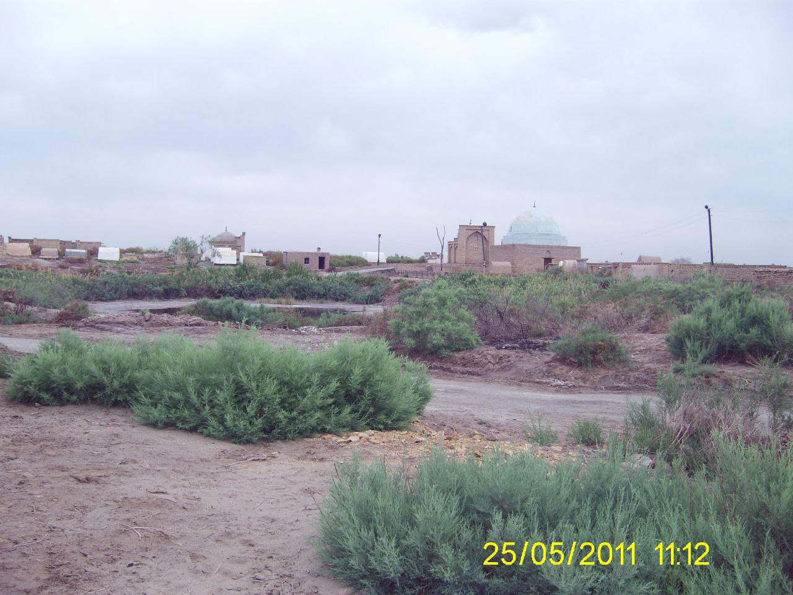
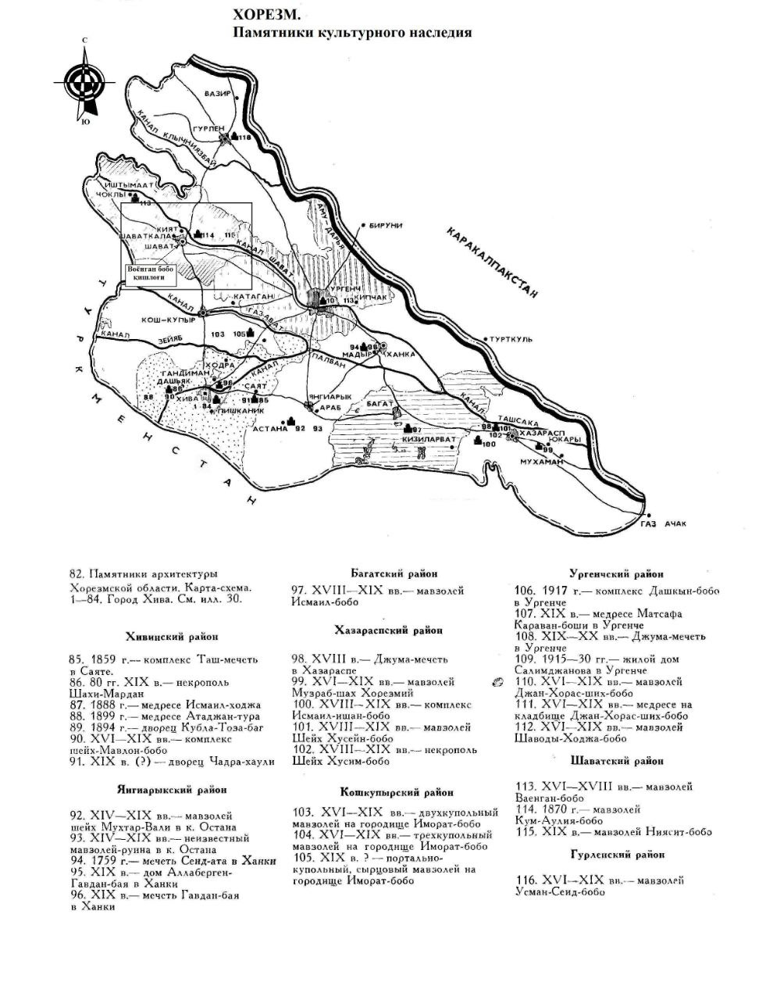

"VOYANGAN QAL’A"
1. Me’moriy inshootning nomi:
"VOYANGAN QAL’A"
2. Me’moriy inshoot tiklangan yil:
mil. avv. IV-III-va IX-XVI asrlarga oid.
3. Me’moriy inshoot joylashgan manzil:
Voyangan qal’asi Shovot tumanidagi Manoq qishlog‘ida joylashgan
4. Me’moriy inshootning qurilish materiallari:
Xom g‘isht, paxsa - guvala, qum, yog‘och
5. Inshootning bosh fasadi h.k.lar:


6. Me’moriy inshootning o‘lchamlari
YGʻarbiy qism 280x360m. Sharqiy qism 320x220 m.dan iborat
7. Me’moriy inshoot to‘g‘risida tarixiy ma’lumot:
Qal’a zardushtiylik davrida Ardaxushmisan, keyinroq esa Voyangan deya nomlangan. Arxeologlarning aniqlashicha, yodgorlikning rejalashtirilishi to‘g‘riburchak shaklida, yer sathidan 2-3m balandlikka qurilgan. Ya’ni, shu tarzda yodgorlikning ichki tuzilishi jihatidan ikki qismga ajratilganligi yaqqol ko‘zga tashlanadi. Qadimda Voyangan devor bilan o‘rab olingan bo‘lib, uning saqlanib qolishi turlicha. Ayniqsa janubiy qismda yaxshi saqlanib qolgan devor va yarim aylanali burjlar qoldig‘i ko‘zga tashlanadi.
Devor avval paxsadan, keyin to‘rt tomoni teng xomg‘ishtdan qurilgan. Sharqiy tomonda yodgorlikning ikkinchi qismi joylashgan, uning hajmi 320x220m. Shaharning g‘arbiy tamoni 10gektarni tashkil etgan. Milodiy V-IX asrlarda mudofaa devorining yuqori qismi, ya’ni uchinchi qurilish davrida paxsadevor qurilgan. Antik davrdagi yo‘lak paxsadevor bilan to‘ldirilgan.Bu davrda paxsadevorbalandligi 1m. qalinligi esa 4metr bo‘lgan. Shahar hududi sharq tomon kengayib, IX-X asrlarga kelib umumiy maydoni 17 gektar bo‘lgan. Yodgorlikda arxeologik tadqiqotlarni olib borish imkoniyati mavjud emas, chunki hozirgi vaqtda mahalliy aholi tomonidan qabristonga aylantirilgan.
8. Me’moriy inshootning texnik holati:
Yer ustki qism 100% devor konstruksiyalari ekologik va texnogen ta’sirlar natijasida yo‘qolib ketgan
BOSH SAHIFAGA QAYTISH